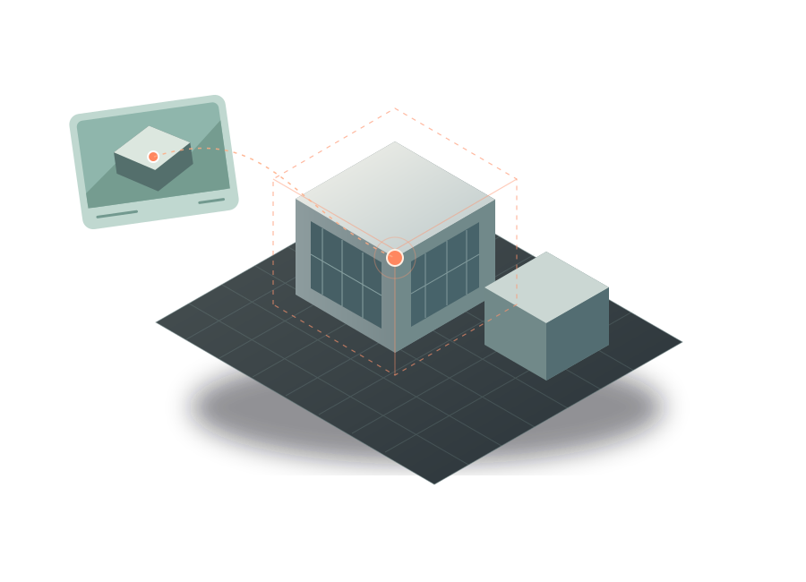
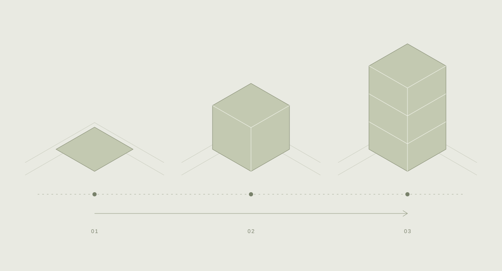

COMPUTER VISION / SPATIAL TOOLS
Seeing in
space & time.
Computer vision for understanding the built environment.

From image to space.
Connecting drone imagery with its place in a 3D site.
Computer vision, spatial reasoning, and visual review.

A clearer view of change.
Aligning images over time to make construction progress easier to see.
Image registration and time-lapse alignment workflows.
Spatial mapping & visual progress, illustrated.
NEXT PROJECTPhoto Finisher